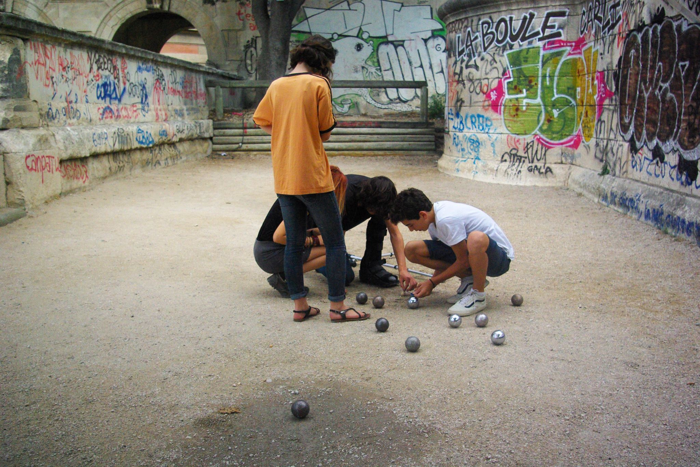
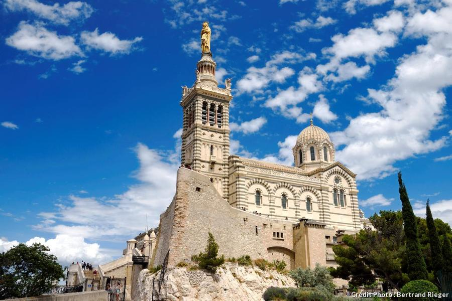
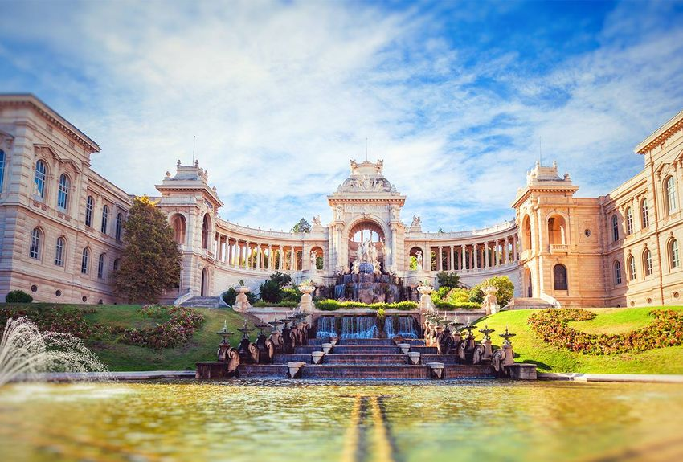
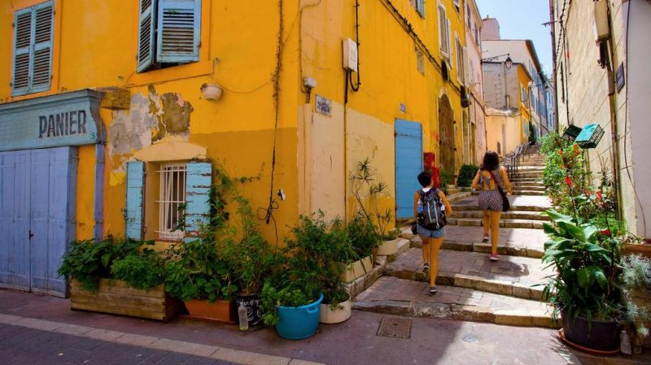
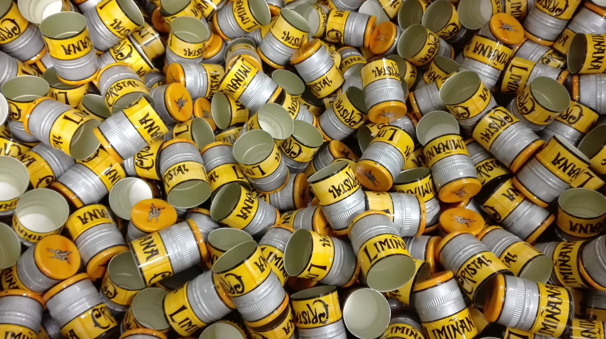
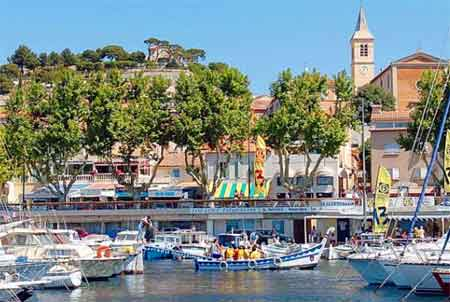

La deuxième ville de France est résolument décontractée. L'ambiance diffère largement de celle de sa voisine, Aix-en-Provence, plus mondaine. Cel saute aux yeux particulièrement en été alors que l'on voit se promener les gaillards torse nu dans les rues de la ville et qu'on voit défiler sur les grands boulevards les cagoles perchées sur leurs talons hauts et arborant des décolletés pigeonnants. Bien sur, Marseille est aussi méditerranéenne: les gens n'ont pas franchement adopté le rythme rapide réputé de mise dans les grandes métropoles occidentales et les automobilistes semblent se ficher éperdument de bloquer les rues pour discuter par la fenêtre de leurs véhicules. Malgres tout, Marseille est une ville fabuleuse et pour le comprendre il faut tout d'abord aller visiter ses recoins! Sans oublier nos chères et tendres îles. C'est pour ça que je suis là ! Histoire de vous faire partager ma passions.. Evidemment, Marseille est remplie d'endroits merveilleux, et parmis c'est lieux il y en a quelques uns (héréditaire à cette ville) qui se cachent dans chaques quartiers. A utiliser sans modération, les boulodromes sont chargés de chaleur et de rencontre. En prime, voici l'adresse du musée unique et pittoresque consacré à l'histoire de la pétanque et des jeux de boules plus quelques adresses parmis tant d'autres de boulodrome : Musée exceptionel : 4 Place des 13 Cantons, 13002 Marseille 4 Rue des trois Mages, 13006 Marseille 50 Rue Monte Cristo, 13005 Marseille Place de la Major, 13002 Marseille Rue Levat, 13003 Marseille (jardin Levat/Le couvent)  Les Eglises Je ne peux que vous proposer un petit top 4 de ces monuments religieux. Premierement : Notre Dame de la garde. Si ette Basilique se trouve être une emblême ce n'est pas pour rien. je n'ai pas de mot pour la décrire alors Je vous laisse la surprise de mon émerveillement. Deuxiemement la Major. Autant à l'intérieur qu'à l'extérieur elle renferme beaucoup de secret et d'anecdote plutôt sympathique. Troisiemement, la basilique St Victor qui, elle aussi une incroyable histoire et qui est liée a la bénédiction des navettes pour la chandeleur (très belle déambulation). Pour finir, l'église des Réformés très belle et encore plus pendant les périodes de Noël !  Parc Longchamp Alors oui il ya beaucoup de parc sur Marseille assez sympa comme le parc du 26eme centenaire ou se trouve plusieurs jardin a thème ou encore le parc Borély qui arbore une partie roseraie magnifique, mais je vais plutôt me focus sur le Palais longchamp. C'est un lieu de 12m² qui est emplit d'histoire. Il est crée pour l'arriver de l'eau à Marseille. Ancien jardin zoologique, ce parc arbore, intégré au palais, deux museum : un muséum d'histoire naturelle et un musée des Beaux-Arts. Entre jardin fleuris, jeux d'enfants, théatre et cascades ce jardin est super pour passer des journées au soleil. De plus il y est organisé plusieurs festivals au cours de l'année ! 
À ne pas manquer ! Le Panier Le panier est la vieille ville de marseille. On y reconnait bien l'ambiance de Marseille. C'est un mini village consitué de toutes petites rues bien décorées par ses habitants, de boutiques, restaurants et marchand de glaces; mais surtout de la Vieille Charité ( qui est un lieu magnifique servant de musée et salle d'exposition).  Apéro ! Apéroooo. Oui, oui la légende est bien fondée, les pastis vient bien de chez nous! Mis a part l'usine de 51 qui se trouve au abords de Marseille; une petite usine du "Crystal Liminanas" se faufilent entre les rues de la blancarde et il est possible de la visiter! Nous avons aussi une marque bien à nous nommée comme son quartier favori "La plaine". "La plaine" est une nouvelle marque créant des bières et depuis peu un pastis succulent à déguster avec modération bien sur. Evidemment d'autres marque de bière comme " La Minotte" ou encore "La Cagole" sont aussi a gouter!  L'Estaque L'estaque c'est une ancienne bourgade de pécheurs rattachée à Marseille. Piéton rendez-vous à la Joliette pour prendre le bus 35 direction l'Estaque village ! Si vous voulez aller vers la côte bleue vous êtes obligé d'y passer (c'est pour vous annoncer la couleur). Lieu charmant autant sur ses hauteurs (moins connues) que sur son port ou encore perdus dans ses petites rues. Il ne faut surtout pas oublier, c'est un peu plus loins mais c'est une chose sur laquelle je m'en voudrai de ne pas vous en parler : La Cité Des Arts de la Rue ALLEZ Y ! Et bien sur, ne pas oublier de gouter les spécialités : Panisses et Chichis !  Fort St Jean À Marseille nous avons deux Fort enclavés de chaque cotés du Vieux Port: St Nicolas (coté gauche) et St Jean (coté droit). Les deux sont à visiter bien évidemment. Mais je vais ici vous parler du Fort St Jean qui je trouve a été magnifiquement bien aménagé. Il y a tout a y faire, manger se reposer ou visiter des expositions. Car ce fort a une particularité de plus, c'est qu'il est relié au Mucem. C'est deux batiments sont tout deux des labyrinthes de seduction. A VOIR !